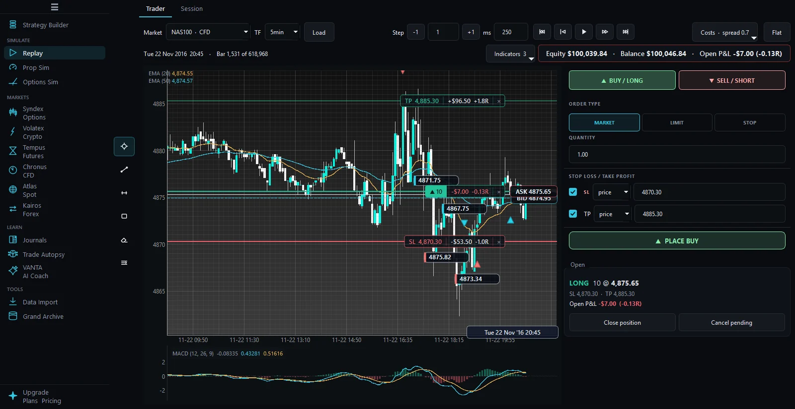
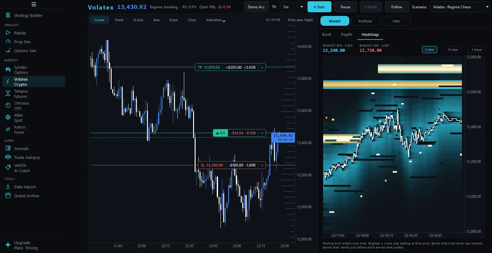
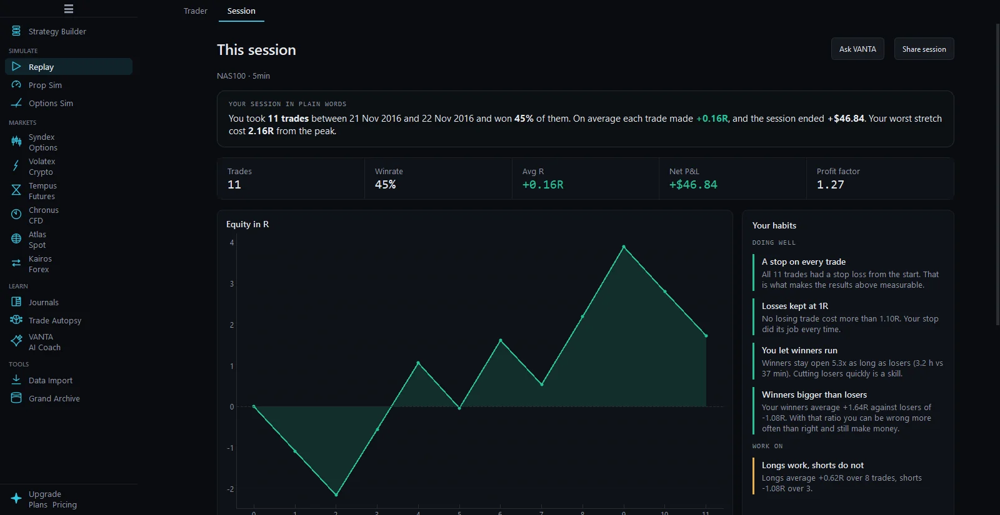
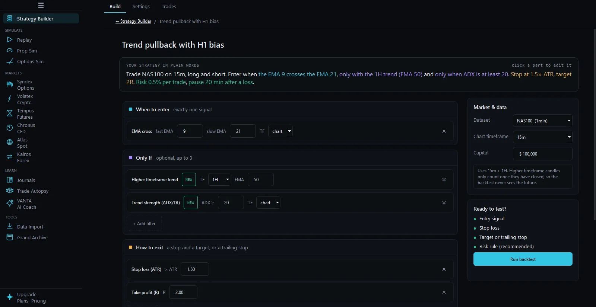
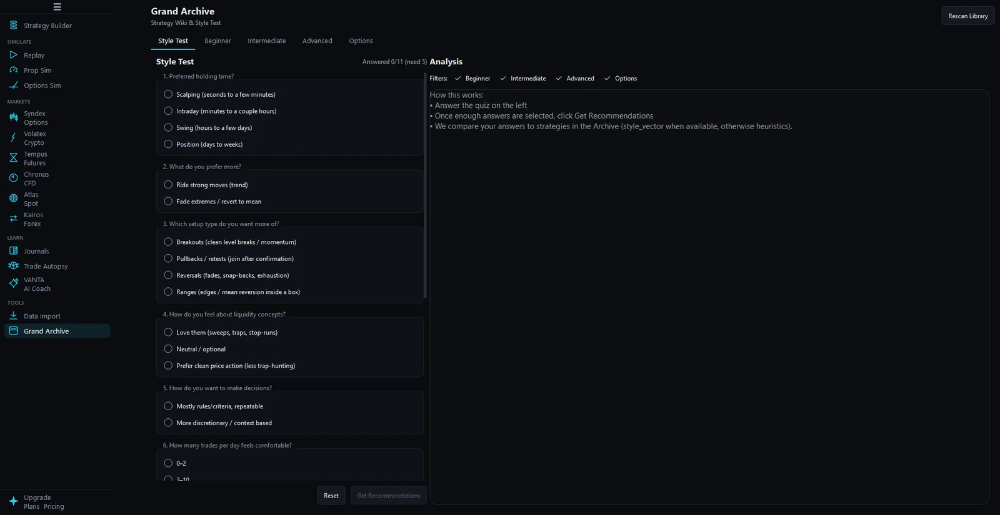

01 · Replay
Hide the future.
Pick a market and a date, then move forward one bar at a time. You see exactly what you would have seen live, nothing more. 10 years of data are included, or bring your own.
JarvQuant replays real market data bar by bar with the future hidden. Practise your setups, then let Trade Autopsy show you what your trades are really doing to your account.
Pick a market and a date, then move forward one bar at a time. You see exactly what you would have seen live, nothing more. 10 years of data are included, or bring your own.
Market, limit and stop orders with stop loss and take profit, plus spread, slippage and fees. Add prop firm rules when you want the pressure.
Trade Autopsy reads your history and finds what memory hides: revenge trades, overtrading and the session that quietly costs you money.
Write what you learned into the Strategy Builder as hard limits, so your next session starts from a better version of your plan.





Step through history one bar at a time without seeing what comes next. Practice entries, exits and risk on real data with zero hindsight.
Structured entries for context, setup, execution and review, linked to your actual results. Searchable, exportable to PDF.
Algorithmic review of your history: overtrading, revenge trades, session performance and drawdown streaks.
Turn your rules and risk limits into hard constraints, then backtest them before you trust them with money.
Profit targets, daily loss limits and trailing drawdown. Find out how you trade under the rules before you pay the evaluation fee.
300+ strategy playbooks with checklists and known failure patterns, from ORB to order flow. A style test matches them to you.
Synthetic markets that never repeat: options with live Greeks and an IV surface, plus crypto, futures, CFD, spot and forex.
A coach that reads your journal and Autopsy reports, so the feedback is about your trades and not trading in general.
Bring your own data and history from MetaTrader 5, TradingView CSV exports or Parquet files.
Trades, journals and imports live on your machine. They are never uploaded to us.
No venture funding, so pricing is set by the product and not by a growth target. No upsells, no signals, no lifestyle content.
Feature requests and bug reports from the Discord go straight into the next release.
No credit card to start. Paid plans and a 7-day Elite trial are available inside the app.
The full simulation suite. Options Sim with live chains, Greeks, IV modeling and DTE tracking. Syndex synthetic market engine. Five additional synthetic markets: Volatex, Tempus, Chronus, Atlas, Kairos. Stack on any paid tier.
Elite plan including PANTHEON, forever. All future tiers and add-ons included at no extra cost. One payment, never charged again. Hard cap at 200 seats. Founders rate locked for life.
All sales are final. You can cancel any subscription at any time to stop future billing, and access stays active until the end of the current billing period.
A desktop trading simulator and training environment for retail traders. You practise stocks, futures, forex and options against replayed historical data and synthetic markets, then review your own behaviour with the journal, Trade Autopsy and the VANTA coach.
No. You trade against historical data replayed bar by bar, or against synthetic markets from the JQIV engine. No orders are routed to a broker and no real money is at risk.
Yes. PANTHEON is a synthetic options market with a full chain, live Greeks (delta, gamma, theta, vega), an implied volatility surface and an order book. Practise long calls and puts, covered calls, spreads and straddles without risking capital.
Broker paper trading runs in real time, so rehearsing a setup means waiting for it to happen again. JarvQuant replays history at any speed, so you can work through hundreds of setups in an afternoon while future bars stay hidden.
Yes. The Prop Firm Simulator reproduces evaluation rules such as profit targets, maximum daily loss and trailing or end-of-day drawdown, so you learn how you behave under those rules before paying an evaluation fee.
The free plan includes bar-by-bar replay, data import and a journal capped at 10 entries, with no card and no time limit. A 7-day Elite trial can be started inside the app and unlocks everything, including PANTHEON and VANTA.
Yes. Import your MT5 trade history through the data bridge, or load CSV and Parquet files, and analyse your real trading in Trade Autopsy and the journal next to your simulated sessions.
JarvQuant is a native Windows desktop app with a one-click installer. Every release is published on GitHub and scanned on VirusTotal. The interface is available in English and German.
Install the free plan and replay your first session in a few minutes.